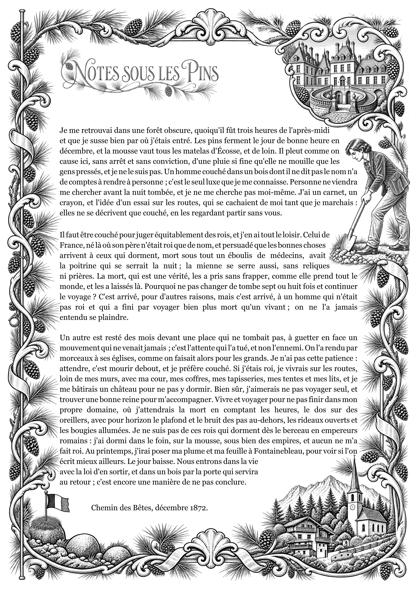
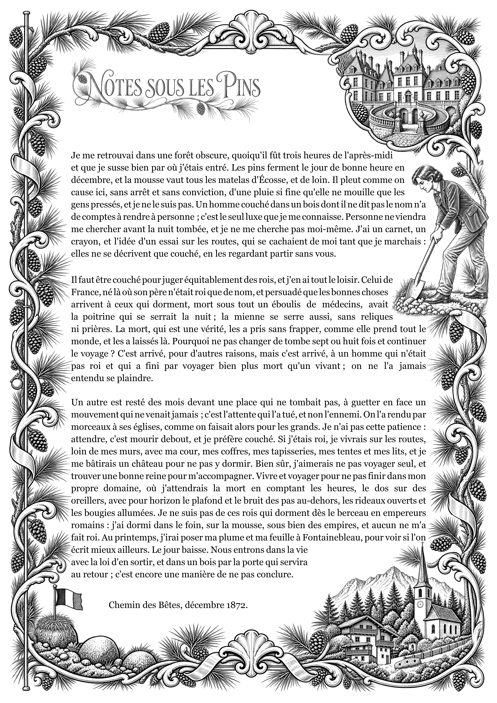

Version initiale 8 oct. · 10 h 54
Première correction 8 oct. · 22 h 01

Nouvelle version 29 oct. · 11 h 51

Molette pour zoomer · Glisser pour déplacer · Double-clic pour agrandir · Flèches et + / − au clavier. Les trois vues restent synchronisées.

